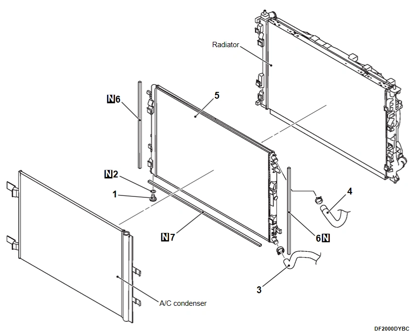
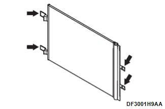
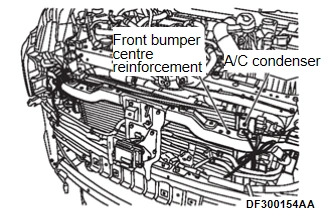
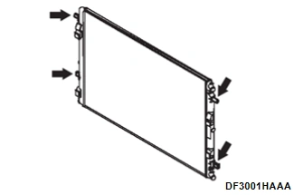

引擎<4B4> - 進排氣 - 中冷器 - 中冷器散熱器
拆卸與安裝
N502451360000K00ENG
拆卸前與安裝後作動
中冷器冷卻液排放與加注（請參閱
中冷器冷卻液更換
).
CVT 油量檢查（請參閱 Transmission and Driveline - Transaxle and Transmission - CVT - Periodic Maintenance - CVT Fluid - 調整
調整
）<僅於安裝後作動>。
前保桿總成拆卸與安裝（請參閱 車身 Exterior, Doors, Roof and 車輛 Security - Exterior - 拆卸與安裝 - Front Bumper
前保險桿總成拆卸與安裝
).
CVT 油冷卻器支架拆卸與安裝（請參閱 Transmission and Driveline - Transaxle and Transmission - CVT - 拆卸與安裝 - CVT Fluid Cooler and Cooler Hose
拆卸與安裝
).
頭燈支撐上板拆卸與安裝（請參閱 車身 Exterior, Doors, Roof and 車輛 Security - Exterior - 拆卸與安裝 - Loose panel
拆卸與安裝
).
前保桿加強樑中央拆卸與安裝（請參閱 車身 Exterior, Doors, Roof and 車輛 Security - Exterior - 拆卸與安裝 - Front Bumper
前保險桿總成拆卸與安裝
).
主動式水箱護罩百葉拆卸與安裝（請參閱 車身 Exterior, Doors, Roof and 車輛 Security - Exterior - 拆卸與安裝 - Active Grille Shutter
拆卸與安裝
).

拆卸步驟
1.
洩油塞
2.
O 環
3.
中冷器水泵出水軟管接頭
4.
中冷器進水軟管 C 接頭
<<A>>
5.
中冷器散熱器
6.
中冷器散熱器側部密封條
7.
中冷器散熱器下部密封條
拆卸要點
<<A>> 中冷器散熱器拆卸
從中冷器散熱器斷開/拔除空調冷凝器固定扣，並將空調冷凝器向前移動。

以繩索將拆下的空調冷凝器固定於不會妨礙中冷器散熱器拆卸與安裝的位置。

從散熱器斷開/拔除中冷器散熱器固定扣，並向上拆下中冷器散熱器。

已加入書籤
書籤數量過多。
請刪除後重新加入書籤。
×
){kind=link}
){kind=link}
){kind=link}
){kind=link}